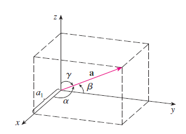
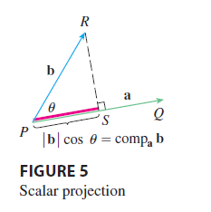
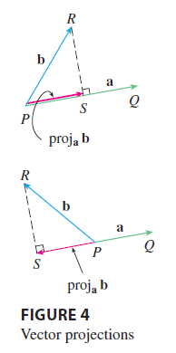
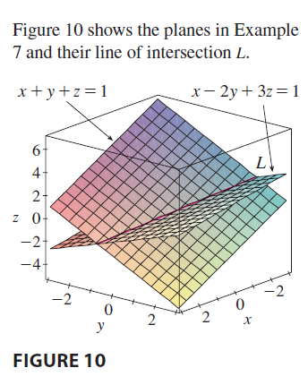
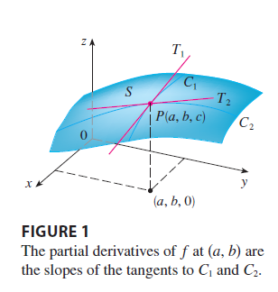
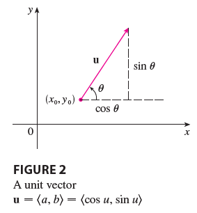
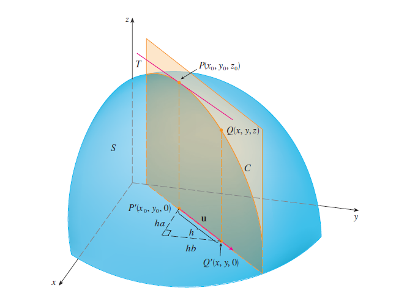
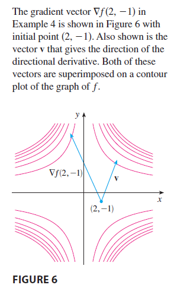

6 Vectors and Geometry of Space
6.1 Three-Dimensinal Coordinate Systems
Definition The three coordinate axes determine the three coordinate planes. These three coordinate planes divide space into eight parts, called octants.
The first octant is determined by the positive axes.

Coordinates We represent the point \(P\) by the ordered triple \((a,b,c)\). We call \(a, b, c\) the coordinates of \(P\).
Projection The point \(P(a,b,c)\) determines a rectangular box. If we drop a perpendicular from \(P\) to each coordinate plane. We get three projections of \(P\) as \(Q(a,b,0), R(0,b,c), S(a,0,c)\).

Three dimensional rectangular coordinate system The Cartesian product \(\mathbb{R}\times\mathbb{R}\times\mathbb{R}=\{(x,y,z)|x,y,z\in\mathbb{R}\}\) is the set of all ordered triples of real numbers and is denoted by \(R^3\).
Surface In three-dimensional analytica geometry, an equation in \(x,y,z\) represents a surface in \(R^3\).


Distance The distance \(|P_1P_2|\) between the points \(P_1(x_1,y_1,z_1)\) and \(P_2(x_2,y_2,z_2)\) is \[|P_1P_2|=\sqrt{(x_2-x_1)^2+(y_2-y_1)^2+(z_2-z_1)^2}\]
Equation of a sphere An equation of a sphere with center \(C(h,k,l)\) and radius \(r\) is \[(x-h)^2+(y-k)^2+(z-l)^2=r^2.\]

6.2 Vectors
Definition A quantity (such as displacement or velocity or force) with both magnitude and direction.
Example For instance, suppose a particle moves along a line segment from point \(A\) to point \(B\). The corresponding displacement vector \(\mathbf{v}\) has initial point \(A\) (the tail) and terminal point \(B\) (the tip), and we indicate this by writing \(\mathbf{v}=\overset{\longrightarrow}{AB}\). Notice that if a vector \(\mathbf{u}\) has the same length and the same direction even though it is in a different position. We say \(\mathbf{u}\) and \(\mathbf{v}\) are equivalent and we write \(\mathbf{u}=\mathbf{v}\).

Vector addition If \(\mathbf{u}\) and \(\mathbf{v}\) are vectors positioned so the initial point of \(\mathbf{v}\) is at the terminal point of \(\mathbf{u}\), then the sum \(\mathbf{u}+\mathbf{v}\) is the vector from the initial point of \(\mathbf{u}\) to the terminal point of \(\mathbf{v}\).

Scalar multiplication If \(c\) is a scalar and \(\mathbf{v}\) is a vector, then the scalar multiple \(c\mathbf{v}\) is the vector whose length is \(|c|\) times the length of \(\mathbf{v}\) and whose direction is the same as \(\mathbf{v}\) if \(c>0\) and is opposite to \(\mathbf{v}\) if \(c<0\).

Components If we place the initial point of a vector \(\boldsymbol{a}\) at the origin of a rectangle coordinate system, then the terminal point has coordinates \((a_1,a_2)\). These coordinates are called the components of \(\boldsymbol{a}\). We write \[\boldsymbol{a}=\langle a_1, a_2 \rangle.\]
Representation Given the points \(A(x_1,y_1,z_1)\) and \(B(x_2,y_2,z_2)\), the vector \(\boldsymbol{a}\) with representation \(\overset{\longrightarrow}{AB}\) is \(\boldsymbol{a}=\langle x_2-x_1,y_2-y_1, z_2-z_1 \rangle,\)
Position vector The vector \(\boldsymbol{a}=\overset{\longrightarrow}{OP}=\langle a_1, a_2, a_3 \rangle\) is the position vector of the point \(P( a_1, a_2, a_3)\)
Example Find the vector represented by the directed line segment with initial point \(A(2,-3,4)\) and terminal point \(B(-2,1,1)\).
Magnitude The length of the vector \(\boldsymbol{a}=\langle a_1,a_2,a_3 \rangle\) is the length of any of its representations and is denoted by the symbol \(|\boldsymbol{a}|\) or \(||\boldsymbol{a}||\): \[|\boldsymbol{a}|=\sqrt{a_1^2+a_2^2+a_3^2}\]
Operations on algebraic vectors If \(\boldsymbol{a}=\langle a_1,a_2 \rangle\) and \(\boldsymbol{b}=\langle b_1,b_2 \rangle\), then \[\boldsymbol{a}+\boldsymbol{b}=\langle a_1+b_1, a_2+b_2 \rangle\] \[\boldsymbol{a}-\boldsymbol{b}=\langle a_1-b_1, a_2-b_2 \rangle\] \[c\boldsymbol{a}=\langle ca_1, ca_2 \rangle\]

Example If \(\boldsymbol{a}=\langle 4,0,3\rangle\) and \(\boldsymbol{b}=\langle -2,1,5\rangle\), find \(|\boldsymbol{a}|\) and the vectors \(\boldsymbol{a}+\boldsymbol{b},2\boldsymbol{a}+5\boldsymbol{b}\).
Properties of Vectors Consider the set of all \(n\)-dimensional vectors \(V_n\), we have the following properties for any \(\boldsymbol{a},\boldsymbol{b},\boldsymbol{c}\in V_n\) and \(c,d\in\mathbb{R}\):
\(\boldsymbol{a} + \boldsymbol{b}= \boldsymbol{b} + \boldsymbol{a}\)
\(\boldsymbol{a} + (\boldsymbol{b} + \boldsymbol{c} )= (\boldsymbol{a} +\boldsymbol{b}) + \boldsymbol{c}\)
\(\boldsymbol{a} + \boldsymbol{0} = \boldsymbol{a}\)
\(\boldsymbol{a} - \boldsymbol{a} = \boldsymbol{0}\)
\(c(\boldsymbol{a} + \boldsymbol{b}) = c\boldsymbol{a} + c\boldsymbol{b}\)
\((c+d)\boldsymbol{a}=c\boldsymbol{a}+d\boldsymbol{a}\)
\((cd)\boldsymbol{a}=c(d\boldsymbol{a})\)
\(1\boldsymbol{a}=\boldsymbol{a}\)
Standard basis vectors \[\boldsymbol{i}=\langle 1, 0, 0\rangle, \boldsymbol{j}=\langle 0,1,0\rangle, \boldsymbol{k}=\langle 0, 0, 1\rangle\]
Example If \(\boldsymbol{a}=\langle a_1,a_2,a_3\rangle\), then we have \(\boldsymbol{a}=a_1\boldsymbol{i}+a_2\boldsymbol{j}+a_3\boldsymbol{k}\).
Example If \(\boldsymbol{a}=\boldsymbol{i}+2\boldsymbol{j}-3\boldsymbol{k}\) and \(\boldsymbol{b}=4\boldsymbol{i}+7\boldsymbol{k}\), express the vector \(2\boldsymbol{a}+3\boldsymbol{b}\) in terms of the three standard basis vectors.
Unit vector In general, if \(\boldsymbol{a}\neq\boldsymbol{0}\), then the unit vector that has the same direction as \(\boldsymbol{a}\) is \[\boldsymbol{u}=\frac{\boldsymbol{a}}{|\boldsymbol{a}|}\]
Example Find the unit vector in the direction of the vector \(2\boldsymbol{i}-\boldsymbol{j}-2\boldsymbol{k}\).
6.3 Dot Product
Definition If \(\mathbf{a}=\langle a_1,a_2,a_3 \rangle\) and \(\mathbf{b}=\langle b_1,b_2,b_3 \rangle\), then the dot product of \(\mathbf{a}\) and \(\mathbf{b}\) is the number \(\mathbf{a}\cdot\mathbf{b}\) given by \[\mathbf{a}\cdot\mathbf{b}=a_1b_1+a_2b_2+a_3b_3.\] which is also called as scalar or inner product.
Properties If \(\mathbf{a},\mathbf{b}, \mathbf{c}\) are vectors in \(V_3\) and \(c\) is a scalar, then
\(\mathbf{a}\cdot\mathbf{a}=|\mathbf{a}|^2\)
\(\mathbf{a}\cdot\mathbf{b}=\mathbf{b}\cdot\mathbf{a}\)
\(\mathbf{a}\cdot(\mathbf{b}+\mathbf{c})=\mathbf{a}\cdot\mathbf{b}+\mathbf{a}\cdot\mathbf{c}\)
\((c\mathbf{a})\cdot\mathbf{b}=c(\mathbf{a}\cdot\mathbf{b})=\mathbf{a}\cdot(c\mathbf{b})\)
\(\mathbf{0}\cdot\mathbf{a}=0\)
Theorem If \(\theta\) is the angle between the vectors \(\mathbf{a}\) and \(\mathbf{b}\), then \[\mathbf{a}\cdot\mathbf{b}=|\mathbf{a}||\mathbf{b}|\cos\theta\]
Example If the vectors \(\mathbf{a}\) and \(\mathbf{b}\) have length 4 and 6, and the angle between them is \(\pi/3\), find \(\mathbf{a}\cdot\mathbf{b}\).
Corollary If \(\theta\) is the angle between the nonzero vectors \(\mathbf{a}\) and \(\mathbf{b}\), then \[\cos\theta=\frac{\mathbf{a}\cdot\mathbf{b}}{|\mathbf{a}||\mathbf{b}|}\]
Example Find the angle between the vectors \(\mathbf{a}=\langle 2,2,-1\rangle\) and \(\mathbf{b}=\langle5,-3,2 \rangle\).
Orthogonality Two vectors \(\mathbf{a}\) and \(\mathbf{b}\) are perpendicular or orthogonal if and only if \(\mathbf{a}\cdot\mathbf{b}=0\).
Example Show that \(2\mathbf{i}+2\mathbf{j}-\mathbf{k}\) is perpendicular to \(5\mathbf{i}-4\mathbf{j}+2\mathbf{k}\).
Direction angles and direction cosines The direction angles of a nonzero vector \(\mathbf{a}\) are the angles \(\alpha,\beta,\gamma \in [0,\pi]\) that \(\mathbb{a}\) makes with the positive \(x-,y-,z-\) axes, respectively. The cosines of these direction angles \(\cos\alpha,\cos\beta,\cos\gamma\) are called the direction cosines of the vector \(\mathbf{a}\).  \[\cos\alpha=\frac{\mathbf{a}\cdot\mathbf{i}}{|\mathbf{a}||\mathbf{i}|}=\frac{a_1}{|\mathbf{a}|}\] \[\cos\beta=\frac{a_2}{|\mathbf{a}|}\]
\[\cos\gamma=\frac{a_3}{|\mathbf{a}|}\]
\[\mathbf{a}=\langle a_1,a_2,a_3\rangle=\langle |\mathbf{a}|\cos\alpha,|\mathbf{a}|\cos\beta,|\mathbf{a}|\cos\gamma \rangle=|\mathbf{a}|\langle\cos\alpha,\cos\beta,\cos\gamma \rangle\]
\[\frac{1}{|\mathbf{a}|}\mathbf{a}=\langle \cos\alpha,\cos\beta,\cos\gamma \rangle.\] which says that the direction cosines of \(\mathbf{a}\) are the components of the unit vector in the direction of \(\mathbf{a}\).
Example Find the direction angles of the vector \(\mathbf{a}=\langle1,2,3\rangle\)
Scalar projection The scalar projection of \(\mathbf{b}\) onto \(\mathbf{a}\) (also called the component of \(\mathbf{b}\) along \(\mathbf{a}\)) is defined to be the signed magnitude of the vector projection, which is the number \(|\mathbf{B}|\cos\theta\), where \(\theta\) is the angle between \(\mathbf{a}\) and \(\mathbf{b}\). This is denoted by \(\text{comp}_\mathbf{a}\mathbf{b}\). \[\text{comp}_\mathbf{a}\mathbf{b}=\frac{\mathbf{a}\cdot\mathbf{b}}{|\mathbf{a}|}=\frac{\mathbf{a}}{|\mathbf{a}|}\cdot\mathbf{b},\] which is the dot product of \(\mathbf{b}\) with the unit vector in the direction of \(\mathbf{a}\).

Projections Figure 4 shows representations \(\overset{\longrightarrow}{PQ}\), \(\overset{\longrightarrow}{PR}\) of two vectors \(\mathbf{a}\) and \(\mathbf{b}\) with the same initial point \(P\). If \(S\) is the foot of the perpendicular from \(R\) to the line containing containing \(\overset{\longrightarrow}{PQ}\), then the vector with representation \(\overset{\longrightarrow}{PS}\) is called the vector projection of \(\mathbf{b}\) onto \(\mathbf{a}\) and is denoted by \(\text{proj}_\mathbf{a}\mathbf{b}\). (a shadow of \(\mathbf{b}\) on \(\mathbf{a}\)). \[\text{proj}_\mathbf{a}\mathbf{b}=\left(\frac{\mathbf{a}\cdot\mathbf{b}}{|\mathbf{a}|}\right)\frac{\mathbf{a}}{|\mathbf{a}|}=\frac{\mathbf{a}\cdot\mathbf{b}}{|\mathbf{a}|^2}\mathbf{a},\] which is the scalar projection times the unit vector in the direction of \(\mathbf{a}\).
Example Find the scalar projection and vector projection of \(\mathbf{b}=\langle1,1,2\rangle\) onto \(\mathbf{a}=\langle-2,3,1\rangle\). 
6.4 Cross product (not examinable)
Given two nonzero vectors \(\mathbf{a}=\langle a_1,a_2,a_3\rangle\) and \(\mathbf{b}=\langle b_1,b_2,b_3\rangle\), it is very useful to be able to find a nonzero vector \(\mathbf{c}\) that is perpendicular to both \(\mathbf{a}\) and \(\mathbf{b}\). If \(\mathbf{c}=\langle c_1,c_2,c_3\rangle\) is such a vector, then \(\mathbf{a}\cdot\mathbf{c}=0\) and \(\mathbf{b}\cdot\mathbf{c}=0\). We can solve for \(\mathbf{c}=\langle c_1,c_2,c_3\rangle=\langle a_2b_3-a_3b_2,a_3b_1-a_1b_3,a_1b_2-a_2b_1\rangle\). This resulting vector is called the cross product of \(\mathbf{a}\) and \(\mathbf{b}\) and is denoted by \(\mathbf{a}\times\mathbf{b}\).
Definition If \(\mathbf{a}=\langle a_1,a_2,a_3 \rangle\) and \(\mathbf{b}=\langle b_1,b_2,b_3\rangle\), then the cross product of \(\mathbf{a}\) and \(\mathbf{b}\) is the vector \[\mathbf{a}\times\mathbf{b}=\langle a_2b_3-a_3b_2, a_3b_1-a_1b_3,a_1b_2-a_2b_1\rangle,\] which is also called the vector product (only defined for three-dimensional space).
Determinant of order 2 is defined by \[\begin{equation} \left|\begin{matrix} a & b \\ c & d \end{matrix} \right|=ad-bc \end{equation}\]
Determinant of order 3 \[ \left|\begin{matrix} a_1 & a_2 & a_3 \\ b_1 & b_2 & b_3 \\ c_1 & c_2 & c_3 \end{matrix} \right| = a_1 \left|\begin{matrix} b_2 & b_3\\ c_2 & c_3 \end{matrix} \right|-a_2 \left| \begin{matrix} b_1 & b_3 \\ c_1 & c_3 \end{matrix} \right| +a_3\left| \begin{matrix} b_1 & b_2 \\ c_1 & c_2 \end{matrix} \right| \]
Cross product \[ \mathbf{a}\times\mathbf{b}=\left| \begin{matrix} a_2 & a_3 \\ b_2 & b_3 \end{matrix} \right|\mathbf{i} - \left| \begin{matrix} a_1 & a_3 \\ b_1 & b_3 \end{matrix} \right| \mathbf{j} +\left| \begin{matrix} a_1 & a_2 \\ b_1 & b_2 \end{matrix} \right|\mathbf{k} \]
\[ \mathbf{a}\times\mathbf{b}=\left| \begin{matrix} \mathbf{i} & \mathbf{j} & \mathbf{k} \\ a_1 & a_2 & a_3 \\ b_1 & b_2 & b_3 \end{matrix} \right| \]
Example If \(\mathbf{a}=\langle 1,3,4 \rangle\) and \(\mathbf{b}=\langle 2,7,-5 \rangle\), then find \(\mathbf{a}\times\mathbf{b}\).
Example Show that \(\mathbf{a}\times\mathbf{a}=\mathbf{0}\) for any vector \(\mathbf{a}\in V_3\).
Theorem The vector \(\mathbf{a}\times\mathbf{b}\) is orthogonal to both \(\mathbf{a}\) and \(\mathbf{b}\).
Theorem If \(\theta\) is the angle between \(\mathbf{a}\) and \(\mathbf{b}\), then \[|\mathbf{a}\times\mathbf{b}|=|\mathbf{a}||\mathbf{b}|\sin\theta,\] whose length/magnitude is equal to the area of the parallelogram determined by \(\mathbf{a}\) and \(\mathbf{b}\).
Corollary Two nonzero vectors \(\mathbf{a}\) and \(\mathbf{b}\) are parallel if and only if \[\mathbf{a}\times\mathbf{b}=\mathbf{0}.\]
6.5 Equations of Lines and Planes
A line in the \(xy\)-plane is determined when a point on the line and the direction of the line (its slope) are given. The equation of the line can then be written using the point-slope form.
Likewise, a line \(L\) in three-dimensional space is determined when we know a point \(P_0(x_0,y_0,z_0)\) on \(L\) and the direction \(\mathbf{v}=\langle a,b,c\rangle\). Let \(P(x,y,z)\) be an arbitrary point on \(L\) and let \(\mathbf{r}_0\) and \(\mathbf{r}\) be the position vectors of \(P_0\) and \(P\) (that is, they have representations \(\overset{\longrightarrow}{OP_0}\) and \(\overset{\longrightarrow}{OP}\)).
If \(\mathbf{a}\) is the vector with representation \(\overset{\longrightarrow}{P_0P}\), then we have \(\mathbf{r}=\mathbf{r}_0+\mathbf{a}\). But, since \(\mathbf{a}\) and \(\mathbf{v}\) are parallel vectors, there is a scalar \(t\) such that \(\mathbf{a}=t\mathbf{v}\). Thus
\[\mathbf{r}=\mathbf{r}_0+t\mathbf{v},\]
which is a vector equation of \(L\). Each value of the parameter \(t\) gives the position vector \(\mathbf{r}\) of a point on \(L\). We also have the following three scalar equations:
\[x=x_0+ta, y=y_0+tb, z=z_0+tc,\]
where \(t\in\mathbb{R}.\) These equations are called parametric equations of the line \(L\) through the point \(P_0(x_0,y_,z_0)\) and parallel to the vector \(\mathbf{v}=\langle a,b,c\rangle\). Each value of the parameter \(t\) gives a point on \(L\)

Direction numbers The numbers \(a,b,c\) are called direction numbers of \(L\).
Example Find a vector equation and parametric equations for the line that passes through the point \((5,1,3)\) and is parallel to the vector \(\mathbf{i}+4\mathbf{j}-2\mathbf{k}\).
Symmetric equations of \(L\) \[\frac{x-x_0}{a}=\frac{y-y_0}{b}=\frac{z-z_0}{c}.\]
If one of \(a,b,c\) is zero, we can still eliminate \(t\). For instance, if \(a=0\), we could write the equations of \(L\) as \[x=x_0, \frac{y-y_0}{b}=\frac{z-z_0}{c},\] which implies a \(L\) in the vertical plane \(x=x_0\).
Example Find parametric equations and symmetric equations of the line that passes through the points \(A(2,4,-3)\) and \(B(3,-1,1)\). At what point does this line intersect the \(xy\)-plane.
Another vector equation If we know two points on \(L\) and their position vectors are \(\mathbf{r}_0\) and \(\mathbf{r}_1\), then we can take line direction as \(\mathbf{v}=\mathbf{r}_1-\mathbf{r}_0\), and its vector equation is \[\mathbf{r}=\mathbf{r}_0+t(\mathbf{r}_1-\mathbf{r}_0)=(1-t)\mathbf{r}_0+t\mathbf{r}_1\]
Line segment The line segment from \(\mathbf{r}_0\) to \(\mathbf{r}_1\) is given by the vector equation \[\mathbf{r}(t)=(1-t)\mathbf{r}_0+t\mathbf{r}_1\]
Example Show that the lines \(L_1\) and \(L_2\) with parametric equations
L1: \(x=1+t, y=-2+3t, z=4-t\)
L2: \(x=2s, y=3+s, z=-3+4s\)
are skew lines; that is, they do not intersect and are not parallel.
Plane A plane in space is determined by a point \(P_0(x_0,y_0,z_0)\) in the plane and a vector \(\mathbf{n}\) that is orthogonal to the plane. This orthogonal vector \(\mathbf{n}\) is called a normal vector. Let \(P(x,y,z)\) be an arbitrary point in the plane, and let \(\mathbf{r}_0\) and \(\mathbf{r}\) be the position vectors of \(P_0\) and \(P\). Then the vector \(\mathbf{r}-\mathbf{r}_0\) is represented by \(\overset{\longrightarrow}{P_0P}\). The normal vector \(\mathbf{n}\) is orthogonal to every vector in the given plane. In particular, \(\mathbf{n}\) is orthogonal to \(\mathbf{r}-\mathbf{r}_0\) and so we have \[\mathbf{n}\cdot(\mathbf{r}-\mathbf{r}_0)=0\] which can be rewritten as \[\mathbf{n}\cdot\mathbf{r}=\mathbf{n}\cdot\mathbf{r}_0\] They are called a vector equation of the plane.
Scalar equation of plane Suppose normal vector \(\mathbf{n}=\langle a,b,c\rangle\), arbitrary point in the plane \(\mathbf{r}=\langle x,y,z\rangle\) and a point in the plane\(\mathbf{r}_0=\langle x_0,y_0,z_0\rangle\). Then we have \[a(x-x_0)+b(y-y_0)+c(z-z_0)=0\] which gives a plane through point \(P_0(x_0,y_0,z_0)\) with normal vector \(\mathbf{n}=\langle a,b,c \rangle\).

Example Find an equation of the plane through the point \((2,4,-1)\) with normal vector \(\mathbf{n}=\langle 2,3,4 \rangle\).
Linear equation of plane We can rewrite the equation of a plane as \[ax+by+cz+d=0\], where \(d=-(ax_0+by_0+cz_0)\). It can be shown that if \(a,b,c\) are not all 0, then the linear equation represents a plane with normal vector \(\langle a,b,c \rangle\).
Example Find an equation of the plane that passes through the points \(P(1,3,2)\), \(Q(3,-1,6)\) and \(R(5,2,0)\).

Example Find the point at which the line with parametric equations \(x=2+3t, y=-4t, z=5+t\) intersects the plane \(4x+5y-2z=18\)
Parallel Two planes are parallel if their normal vectors are parallel. If two planes are not parallel, then they intersect in a straight line and the angle between the two planes is defined as the acute angle between their normal vectors.

Example Find the angle between the planes \(x+y+z=1\) and \(x-2y+3z=1\). What is the symmetric equations for the line of intersection \(L\) of these two planes. 
Distances The distance \(D\) from a point \(P_1(x_1,y_1,z_1)\) to the plane \(ax+by+cz+d=0\) is given by \[D=\frac{|ax_1+by_1+cz_1+d|}{\sqrt{a^2+b^2+c^2}}.\]
Example Find the distance between the parallel planes \(10x+2y-2z=5\) and \(5x+y-z=1\).
6.6 Directional Derivatives and Gradient Vector
Partial derivatives If \(z=f(x,y)\), then the partial derivatives \(f_x\) and \(f_y\) are defined as \[f_x(a,b)=\underset{h\rightarrow 0}{\lim}\frac{f(a+h,b)-f(a,b)}{h}\] \[f_y(a,b)=\underset{h\rightarrow 0}{\lim}\frac{f(a,b+h)-f(a,b)}{h}\] 
Geometric interpretation of partial derivatives \(C_1\) is the intersection of the vertical plane \(y=b\) and the surface \(S\) (the graph of \(f\)), which is also called as the trace of \(S\) in the plane \(y=b\). The curve \(C_1\) is the graph of the function \(g(x)=f(x,b)\), so the slope of its tangent \(T_1\) at \(P\) is \(g'(a)=f_x(a,b)\). Hence, the partial derivatives \(f_x(a,b), f_y(a,b)\) can be interpreted geometrically as the slopes of the tangent lines at \(P(a,b,c)\) to the traces \(C_1\) and \(C_2\) of \(S\) in the planes \(y=b\) and \(x=a\). In other words, the partial derivatives represent the rate of change of \(z\) w.r.t. \(y\) when \(x\) is fixed. That is to say, partial derivatives represent the rates of change of \(z\) in the \(x-\) and \(y-\) directions, that is, in the directions of the unit vectors \(\mathbf{i}\) and \(\mathbf{j}\).
Directional derivatives Suppose that we now wish to find the rate of change of \(z\) at \((x_0,y_0)\) in the direction of an arbitrary unit vector \(\mathbf{u}=\langle a,b\rangle\). The vertical plane that passes through \(P\) in the direction of \(\mathbf{u}\) intersects \(S\) in a curve \(C\). The slope of the tangent line \(T\) to \(C\) at the point \(P\) is the rate of change of \(z\) in the direction of \(\mathbf{u}\).   \(P',Q'\) are the projections of \(P,Q\) onto the \(xy\)-plane, then the vector \(\overset{\longrightarrow}{P'Q'}=h\mathbf{u}=\langle ha,hb \rangle\) for some scalar \(h\). Therefore \(x-x_0=ha, y-y_0=hb,\) so \(x=x_0+ha, y=y_0+hb\), and \[\frac{\Delta z}{h}=\frac{z-z_0}{h}=\frac{f(x_0+ha,y_0+hb)-f(x_0,y_0)}{h}\] If we take the limit as \(h\rightarrow 0,\) we obtain the rate of change of \(z\) in the direction of \(\mathbf{u}\), which is called the directional derivative of \(f\) in the direction of \(\mathbf{u}\).
Directional derivative The directional derivative of \(f\) at \((x_0,y_0)\) in the direction of a unit vector \(\mathbf{u}=\langle a,b \rangle\) is \[D_\mathbf{u}f(x_0,y_0)=\underset{h\rightarrow 0}{\lim}\frac{f(x_0+ha,y_0+hb)-f(x_0,y_0)}{h}.\] if this limit exists.
Example If \(\mathbf{u}=\mathbf{i}=\langle 1, 0\rangle\), then \(D_\mathbf{i}f=f_x\) and if \(\mathbf{u}=\mathbf{j}=\langle 0, 1\rangle\), then \(D_{\mathbf{j}}=f_y\). In other words, the partial derivatives of \(f\) w.r.t. \(x,y\) are just special cases of the directional derivative.
Theorem If \(f\) is a differentiable function of \(x\) and \(y\), then \(f\) has a directional derivative in the direction of any unit vector \(\mathbf{u}=\langle a,b \rangle\) and \[D_\mathbf{u}f(x,y)=f_x(x,y)a+f_y(x,y)b\] or \[D_\mathbf{u}f(x,y)=f_x(x,y)\cos\theta + f_y(x,y)\sin\theta\]
Example Find the directional derivative \(D_\mathbf{u}f(x,y)\) if \[f(x,y)=x^3-3xy+4y^2\]
and \(\mathbf{u}\) is the unit vector given by angle \(\theta=\pi/6\). What is \(D_\mathbf{u}f(1,2)\)?

The directional derivative of a differentiable function can be written as the dot product of two vectors: \[D_\mathbf{u}f(x,y)=f_x(x,y)a+f_y(x,y)b\\=\langle f_x(x,y), f_y(x,y)\rangle \cdot\langle a,b\rangle=\langle f_x(x,y), f_y(x,y)\rangle\cdot\mathbf{u}.\] where the first term is called the gradient of \(f\), denoted by \(\triangledown f\).
Definition If \(f\) is a function of two variables \(x\) and \(y\), then the gradient of \(f\) is the vector function \(\triangledown f\) defined by \[\triangledown f(x,y)=\langle f_x(x,y),f_y(x,y) \rangle=\frac{\partial f}{\partial x}\mathbf{i}+\frac{\partial f}{\partial y}\mathbf{j}\] Vector function A vector-valued function or vector function is a function whose domain is a set of real numbers and whose range is a set of vectors: \[\mathbf{r}(t)=\langle f(t),g(t),h(t)\rangle=f(t)\mathbf{i}+g(t)\mathbf{j}+h(t)\mathbf{k}.\]
Example If \(f(x,y)=\sin x+e^{xy}\), then \[\triangledown f(x,y)=\langle f_x,f_y \rangle=\langle \cos x+ye^{xy}, xe^{xy} \rangle\]
Directional derivative \[D_\mathbf{u}f(x,y)=\triangledown f(x,y)\cdot\mathbf{u}.\] which implies that the directional derivative in the direction of a unit vector \(\mathbf{u}\) is the projection of the gradient vector onto \(\mathbf{u}\).
Example Find the directional derivative of the function \(f(x,y)=x^2y^3-4y\) at the point \((2,-1)\) in the direction of the vector \(\mathbf{v}=2\mathbf{i}+5\mathbf{j}\). 
Theorem Suppose \(f\) is a differentiable function of two or three variables. The maximum value of the directional derivative \(D_\mathbf{u}f(x)\) is \(|\triangledown f(x)|\) and it occurs when \(\mathbf{u}\) has the same direction as the gradient vector \(\triangledown f(x)\).
Example If \(f(x,y)=xe^y\), find the rate of change of \(f\) at the point \(P(2,0)\) in the direction from \(P\) to \(Q(1/2,2)\). In what direction does \(f\) have the maximum rate of change? What is this maximum rate of change?